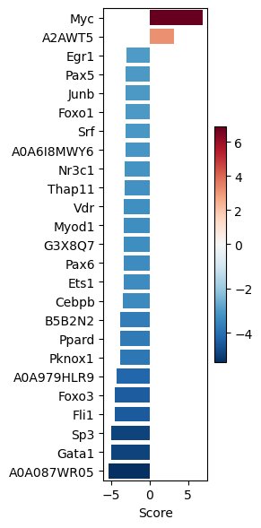
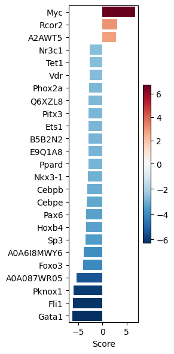
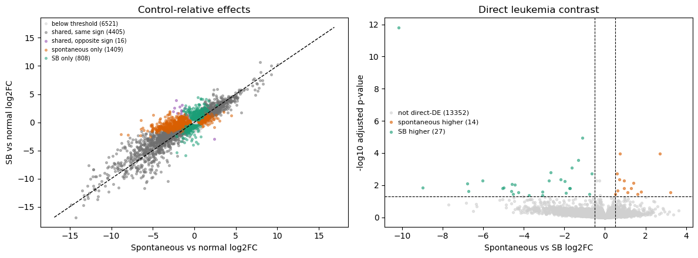
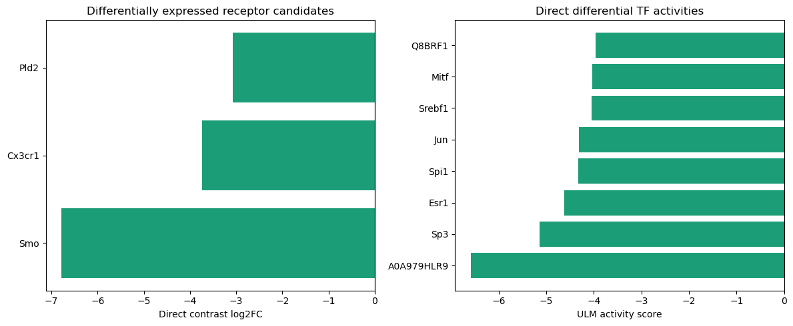
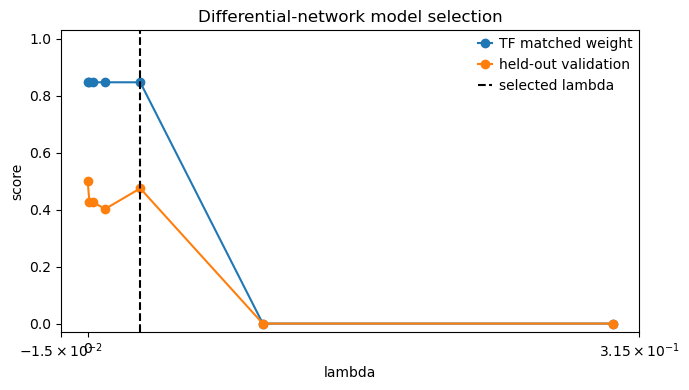

Multi-condition signalling network inference#
In this notebook we show how to infer signalling networks for a multicondition setting.
Here we will use mouse RNA-seq data of a multicondition study, where we will compare normal to spontaneous leukemia and Sleeping-Beauty (SB) mediated leukemia.
In the first part, we will show how to estimate Transcription Factor activities from gene expression data, following the Decoupler tutorial for functional analysis.
Then, we will infer 2 networks for each of the 2 conditions and analyse differences.
Author: Irene Rigato (Francesca Finotello’s group)
Reviewers: Sophia Müller-Dott, Pablo Rodriguez-Mier
# --- Saezlab tools ---
# https://decoupler-py.readthedocs.io/
import gzip
import os
import shutil
import tempfile
import urllib.request
import decoupler as dc
import numpy as np
# https://omnipathdb.org/
import omnipath as op
# Additional packages
import pandas as pd
# --- Additional libs ---
# Pydeseq for differential expression analysis
from pydeseq2.dds import DefaultInference, DeseqDataSet
from pydeseq2.ds import DeseqStats
# https://saezlab.github.io/
import corneto as cn
cn.info()
![]()
|
|
max_time = 300
seed = 0
# loading GEO GSE148679 dataset
url = "https://www.ncbi.nlm.nih.gov/geo/download/?acc=GSE148679&format=file&file=GSE148679%5Fcounts%5Fgsea%5Fanalysis%2Etxt%2Egz"
adata = None
with tempfile.TemporaryDirectory() as tmpdirname:
# Path for the gzipped file in the temp folder
gz_file_path = os.path.join(tmpdirname, "counts.txt.gz")
# Download the file
with urllib.request.urlopen(url) as response:
with open(gz_file_path, "wb") as out_file:
shutil.copyfileobj(response, out_file)
# Decompress the file
decompressed_file_path = gz_file_path[:-3] # Removing '.gz' extension
with gzip.open(gz_file_path, "rb") as f_in:
with open(decompressed_file_path, "wb") as f_out:
shutil.copyfileobj(f_in, f_out)
adata = pd.read_csv(decompressed_file_path, index_col=0, sep="\t").T
adata.head()
| ID | Itm2a | Sergef | Fam109a | Dhx9 | Fam71e2 | Ssu72 | Olfr1018 | Eif2b2 | Mks1 | Hebp2 | ... | Olfr372 | Gosr1 | Ctsw | Ryk | Rhd | Pxmp4 | Gm25500 | 4930455C13Rik | Prss39 | Reg4 |
|---|---|---|---|---|---|---|---|---|---|---|---|---|---|---|---|---|---|---|---|---|---|
| Ebf1.1 | 265 | 332 | 306 | 27823 | 0 | 2969 | 0 | 2614 | 231 | 6 | ... | 0 | 2967 | 674 | 150 | 708 | 830 | 29 | 9 | 7 | 0 |
| Ebf1.2 | 175 | 471 | 335 | 35978 | 0 | 3108 | 0 | 2924 | 192 | 0 | ... | 0 | 2724 | 155 | 142 | 869 | 867 | 5 | 4 | 16 | 0 |
| Ebf1.3 | 266 | 382 | 325 | 30367 | 0 | 3207 | 0 | 2940 | 211 | 7 | ... | 0 | 2547 | 87 | 54 | 291 | 767 | 7 | 7 | 6 | 0 |
| Ebf1.4 | 212 | 388 | 331 | 30406 | 0 | 3168 | 0 | 2871 | 209 | 8 | ... | 0 | 2568 | 169 | 115 | 1244 | 829 | 5 | 1 | 4 | 0 |
| PE.1 | 321 | 312 | 290 | 22272 | 0 | 2631 | 0 | 2236 | 109 | 10 | ... | 0 | 2466 | 837 | 191 | 921 | 888 | 2 | 2 | 8 | 0 |
5 rows × 24420 columns
from anndata import AnnData
adata = AnnData(adata, dtype=np.float32)
adata.var_names_make_unique()
adata
AnnData object with n_obs × n_vars = 53 × 24420
# Assign conditions explicitly. No sample is silently assigned to the control group.
sample_ids = adata.obs_names.to_series()
is_normal = sample_ids.str.match(r"^(WT|Pax5|Ebf1|PE\.\d+$)")
is_spontaneous = sample_ids.str.match(r"^PE\.Leuk\.")
is_sb = sample_ids.str.match(r"^SB")
membership_count = np.column_stack([is_normal, is_spontaneous, is_sb]).sum(axis=1)
if not np.all(membership_count == 1):
invalid = sample_ids.index[membership_count != 1].tolist()
raise ValueError(f"Samples with ambiguous or unknown condition: {invalid}")
adata.obs["condition"] = np.select(
[is_normal, is_spontaneous, is_sb],
["Normal", "Leukemic_spontaneous", "Leukemic_SB"],
default="Unknown",
)
adata.obs["condition"].value_counts()
condition
Leukemic_SB 31
Normal 15
Leukemic_spontaneous 7
Name: count, dtype: int64
Splitting data for network inference and validation#
Both contrasts use a fixed stratified holdout for lambda selection. The normal split is shared so condition scores remain comparable.
# Use a fixed, stratified biological holdout for lambda selection.
# The normal split is shared by both contrasts.
rng = np.random.default_rng(seed)
def train_validation_ids(ids, validation_fraction=0.25):
ids = np.asarray(sorted(ids), dtype=object)
ids = ids[rng.permutation(len(ids))]
n_validation = max(2, int(round(len(ids) * validation_fraction)))
n_validation = min(n_validation, len(ids) - 2)
return ids[n_validation:], ids[:n_validation]
normal_ids = adata.obs_names[adata.obs["condition"] == "Normal"]
spontaneous_ids = adata.obs_names[adata.obs["condition"] == "Leukemic_spontaneous"]
sb_ids = adata.obs_names[adata.obs["condition"] == "Leukemic_SB"]
normal_train, normal_validation = train_validation_ids(normal_ids)
spontaneous_train, spontaneous_validation = train_validation_ids(spontaneous_ids)
sb_train, sb_validation = train_validation_ids(sb_ids)
adata1 = adata[list(normal_train) + list(spontaneous_train)].copy()
adata2 = adata[list(normal_train) + list(sb_train)].copy()
validation_adata1 = adata[list(normal_validation) + list(spontaneous_validation)].copy()
validation_adata2 = adata[list(normal_validation) + list(sb_validation)].copy()
pd.DataFrame(
{
"contrast": ["spontaneous", "SB"],
"train_normal": [len(normal_train)] * 2,
"train_disease": [len(spontaneous_train), len(sb_train)],
"validation_normal": [len(normal_validation)] * 2,
"validation_disease": [len(spontaneous_validation), len(sb_validation)],
}
)
| contrast | train_normal | train_disease | validation_normal | validation_disease | |
|---|---|---|---|---|---|
| 0 | spontaneous | 11 | 5 | 4 | 2 |
| 1 | SB | 11 | 23 | 4 | 8 |
Differential expression analysis per condition#
Contrast 1: Leukemic_spontaneous vs Normal#
# Obtain genes that pass the thresholds
dc.pp.filter_by_expr(
adata1,
group="condition",
min_count=10,
min_total_count=15,
large_n=10,
min_prop=0.8,
)
adata1
AnnData object with n_obs × n_vars = 16 × 13599
obs: 'condition'
# Estimation of differential expression
inference1 = DefaultInference()
dds1 = DeseqDataSet(
adata=adata1,
design_factors="condition",
refit_cooks=True,
inference=inference1,
)
dds1.deseq2()
Using None as control genes, passed at DeseqDataSet initialization
stat_res_leu1 = DeseqStats(dds1, contrast=["condition", "Leukemic_spontaneous", "Normal"], inference=inference1)
stat_res_leu1.summary()
Log2 fold change & Wald test p-value: condition Leukemic_spontaneous vs Normal
baseMean log2FoldChange lfcSE stat pvalue \
ID
Itm2a 297.542647 0.893484 0.215371 4.148578 3.345473e-05
Sergef 516.318790 1.271089 0.118853 10.694655 1.078196e-26
Fam109a 340.369933 0.246593 0.111188 2.217812 2.656763e-02
Dhx9 28163.396930 -0.038032 0.069192 -0.549658 5.825541e-01
Ssu72 2932.274736 0.002847 0.056434 0.050457 9.597584e-01
... ... ... ... ... ...
Ryk 77.201401 -2.781647 0.394009 -7.059862 1.666677e-12
Rhd 378.982439 -4.297269 0.470384 -9.135671 6.500233e-20
Pxmp4 787.520768 -0.381142 0.089869 -4.241074 2.224523e-05
Gm25500 9.541753 0.665993 0.526790 1.264247 2.061412e-01
Prss39 7.693766 0.742798 0.663470 1.119565 2.628993e-01
padj
ID
Itm2a 7.810706e-05
Sergef 2.958178e-25
Fam109a 3.984264e-02
Dhx9 6.351182e-01
Ssu72 9.670747e-01
... ...
Ryk 9.404290e-12
Rhd 8.472136e-19
Pxmp4 5.345232e-05
Gm25500 2.544401e-01
Prss39 3.158001e-01
[13599 rows x 6 columns]
results_df1 = stat_res_leu1.results_df
results_df1.sort_values(by="padj", ascending=True, inplace=False).head()
| baseMean | log2FoldChange | lfcSE | stat | pvalue | padj | |
|---|---|---|---|---|---|---|
| ID | ||||||
| P2ry13 | 850.345057 | 3.279132 | 0.139851 | 23.447320 | 1.407802e-121 | 9.559678e-118 |
| Zfp518b | 587.950374 | -7.670839 | 0.327080 | -23.452452 | 1.247909e-121 | 9.559678e-118 |
| Blvrb | 1843.921725 | -3.118163 | 0.139554 | -22.343761 | 1.388454e-110 | 6.285531e-107 |
| Kif19a | 326.577342 | -5.914527 | 0.269931 | -21.911251 | 2.029295e-106 | 6.889963e-103 |
| Zbtb42 | 319.477801 | -2.080728 | 0.099745 | -20.860557 | 1.222398e-96 | 3.320278e-93 |
Contrast 2: Leukemic_SB vs Normal#
# Obtain genes that pass the thresholds
dc.pp.filter_by_expr(
adata2,
group="condition",
min_count=10,
min_total_count=15,
large_n=10,
min_prop=0.8,
)
adata2
AnnData object with n_obs × n_vars = 34 × 13286
obs: 'condition'
# Estimation of differential expression
inference2 = DefaultInference()
dds2 = DeseqDataSet(
adata=adata2,
design_factors="condition",
refit_cooks=True,
inference=inference2,
)
dds2.deseq2()
Using None as control genes, passed at DeseqDataSet initialization
stat_res_leu2 = DeseqStats(dds2, contrast=["condition", "Leukemic_SB", "Normal"], inference=inference2)
stat_res_leu2.summary()
Log2 fold change & Wald test p-value: condition Leukemic_SB vs Normal
baseMean log2FoldChange lfcSE stat pvalue \
ID
Itm2a 354.819498 0.814702 0.274887 2.963769 3.038960e-03
Sergef 690.444712 1.247942 0.089243 13.983566 1.963960e-44
Fam109a 372.293652 0.304612 0.105585 2.884977 3.914420e-03
Dhx9 28125.836843 -0.017291 0.070394 -0.245630 8.059687e-01
Ssu72 2943.414653 0.012841 0.071734 0.179011 8.579288e-01
... ... ... ... ... ...
Ctsw 152.509072 -1.282962 0.455445 -2.816943 4.848307e-03
Ryk 48.834169 -2.269091 0.335420 -6.764932 1.333718e-11
Rhd 192.158985 -4.350260 0.483113 -9.004647 2.163614e-19
Pxmp4 779.412902 -0.184564 0.117464 -1.571242 1.161264e-01
Gm25500 8.770752 0.167093 0.366501 0.455914 6.484515e-01
padj
ID
Itm2a 5.951595e-03
Sergef 2.438614e-42
Fam109a 7.476564e-03
Dhx9 8.450873e-01
Ssu72 8.875218e-01
... ...
Ctsw 9.094254e-03
Ryk 8.976585e-11
Rhd 3.401867e-18
Pxmp4 1.596332e-01
Gm25500 7.073339e-01
[13286 rows x 6 columns]
results_df2 = stat_res_leu2.results_df
results_df2.sort_values(by="padj", ascending=True, inplace=False).head()
| baseMean | log2FoldChange | lfcSE | stat | pvalue | padj | |
|---|---|---|---|---|---|---|
| ID | ||||||
| Mfsd2b | 2514.371164 | -9.636851 | 0.378623 | -25.452370 | 6.645556e-143 | 8.829286e-139 |
| Pf4 | 3805.666665 | -13.199275 | 0.541930 | -24.356055 | 5.001204e-131 | 3.322300e-127 |
| Itga2b | 9515.339854 | -12.057495 | 0.503300 | -23.956866 | 7.836582e-127 | 3.470561e-123 |
| Ppbp | 19266.371435 | -16.866204 | 0.706022 | -23.889076 | 3.978005e-126 | 1.321294e-122 |
| Adgrl4 | 133.471953 | -9.102316 | 0.387205 | -23.507763 | 3.397368e-122 | 9.027486e-119 |
def fit_validation_de(adata_subset, disease_condition):
validation = adata_subset.copy()
dc.pp.filter_by_expr(
validation,
group="condition",
min_count=10,
min_total_count=15,
large_n=10,
min_prop=0.5,
)
inference = DefaultInference()
dds = DeseqDataSet(
adata=validation,
design="~condition",
refit_cooks=False,
inference=inference,
quiet=True,
)
dds.deseq2()
stats = DeseqStats(
dds,
contrast=["condition", disease_condition, "Normal"],
inference=inference,
quiet=True,
)
stats.summary()
return stats.results_df
validation_results_df1 = fit_validation_de(
validation_adata1, "Leukemic_spontaneous"
)
validation_results_df2 = fit_validation_de(validation_adata2, "Leukemic_SB")
pd.DataFrame(
{
"condition": ["spontaneous", "SB"],
"validation_genes": [len(validation_results_df1), len(validation_results_df2)],
}
)
| condition | validation_genes | |
|---|---|---|
| 0 | spontaneous | 13739 |
| 1 | SB | 13536 |
Prior knowledge with Decoupler and Omnipath#
# Retrieve native mouse CollecTRI interactions through OmniPath.
# This avoids a fragile human-to-mouse translation download.
collectri_raw = op.interactions.CollecTRI.get(organisms="mouse", genesymbols=True)
collectri = collectri_raw.assign(
source=collectri_raw["source_genesymbol"],
target=collectri_raw["target_genesymbol"],
weight=(
collectri_raw["consensus_stimulation"].astype(int)
- collectri_raw["consensus_inhibition"].astype(int)
),
)[["source", "target", "weight"]]
collectri = collectri.loc[collectri["weight"] != 0].drop_duplicates()
collectri.head()
| source | target | weight | |
|---|---|---|---|
| 0 | Myc | Tert | 1 |
| 1 | Spi1 | Bglap2 | 1 |
| 2 | Spi1 | Bglap | 1 |
| 3 | Spi1 | Bglap3 | 1 |
| 4 | Smad3 | Jun | 1 |
TF activity inference per condition#
Contrast 1: Leukemic_spontaneous vs Normal#
mat1 = results_df1[["stat"]].T.rename(index={"stat": "Leukemic_spontaneous.vs.Normal"})
mat1
| ID | Itm2a | Sergef | Fam109a | Dhx9 | Ssu72 | Eif2b2 | Mks1 | Vps28 | Setd6 | Gstm2 | ... | Rag2 | Itgb1bp2 | Sec23ip | Gosr1 | Ctsw | Ryk | Rhd | Pxmp4 | Gm25500 | Prss39 |
|---|---|---|---|---|---|---|---|---|---|---|---|---|---|---|---|---|---|---|---|---|---|
| Leukemic_spontaneous.vs.Normal | 4.148578 | 10.694655 | 2.217812 | -0.549658 | 0.050457 | 5.610092 | 5.178963 | 3.846342 | 8.079712 | -2.671615 | ... | -4.541439 | -0.473154 | -9.441182 | 1.012695 | -1.222221 | -7.059862 | -9.135671 | -4.241074 | 1.264247 | 1.119565 |
1 rows × 13599 columns
tf_acts1, tf_pvals1 = dc.mt.ulm(data=mat1, net=collectri, verbose=True)
tf_acts1
| A0A087WPA7 | A0A087WQ36 | A0A087WR05 | A0A087WSP5 | A0A0A6YWE3 | A0A0A6YWQ4 | A0A0A6YXS3 | A0A0G2JEM8 | A0A0J9YTU7 | A0A0J9YTW3 | ... | Zgpat | Zhx2 | Zic1 | Znf143 | Znf148 | Znf263 | Znf354c | Znf382 | Znf436 | Znf76 | |
|---|---|---|---|---|---|---|---|---|---|---|---|---|---|---|---|---|---|---|---|---|---|
| Leukemic_spontaneous.vs.Normal | -1.656074 | -1.979076 | -5.328064 | 0.162649 | -1.833279 | 0.779211 | 0.51319 | -1.233113 | -0.126254 | 0.446425 | ... | -0.910795 | 1.29885 | -0.013044 | -0.382275 | -1.58947 | -0.731727 | 1.448071 | -0.402687 | -1.753189 | 0.140664 |
1 rows × 540 columns
dc.pl.barplot(
data=tf_acts1,
name="Leukemic_spontaneous.vs.Normal",
top=25,
figsize=(3, 6),
)

Contrast 2: Leukemic_SB vs Normal#
mat2 = results_df2[["stat"]].T.rename(index={"stat": "Leukemic_SB.vs.Normal"})
mat2
| ID | Itm2a | Sergef | Fam109a | Dhx9 | Ssu72 | Eif2b2 | Mks1 | Vps28 | Setd6 | Psma4 | ... | Cd37 | Rag2 | Itgb1bp2 | Sec23ip | Gosr1 | Ctsw | Ryk | Rhd | Pxmp4 | Gm25500 |
|---|---|---|---|---|---|---|---|---|---|---|---|---|---|---|---|---|---|---|---|---|---|
| Leukemic_SB.vs.Normal | 2.963769 | 13.983566 | 2.884977 | -0.24563 | 0.179011 | 5.428026 | 6.215017 | 3.262983 | 5.410293 | 4.873833 | ... | 1.520396 | -2.272855 | -3.153128 | -6.110922 | 1.6341 | -2.816943 | -6.764932 | -9.004647 | -1.571242 | 0.455914 |
1 rows × 13286 columns
tf_acts2, tf_pvals2 = dc.mt.ulm(data=mat2, net=collectri, verbose=True)
tf_acts2
| A0A087WPA7 | A0A087WQ36 | A0A087WR05 | A0A087WSP5 | A0A0A6YWE3 | A0A0A6YWQ4 | A0A0A6YXS3 | A0A0G2JEM8 | A0A0J9YTU7 | A0A0J9YTW3 | ... | Zgpat | Zhx2 | Zic1 | Znf143 | Znf148 | Znf263 | Znf354c | Znf382 | Znf436 | Znf76 | |
|---|---|---|---|---|---|---|---|---|---|---|---|---|---|---|---|---|---|---|---|---|---|
| Leukemic_SB.vs.Normal | -1.03892 | -0.881134 | -5.416913 | 0.317954 | -0.179198 | 0.755719 | 0.235632 | -0.68796 | 0.674024 | -0.397479 | ... | -1.245498 | 1.207684 | 0.267398 | -0.224013 | -2.08245 | -0.238626 | 1.961743 | -1.454379 | -1.668492 | 0.348216 |
1 rows × 530 columns
dc.pl.barplot(
data=tf_acts2,
name="Leukemic_SB.vs.Normal",
top=25,
figsize=(3, 6),
)

Retrieving potential receptors per condition#
# We obtain ligand-receptor interactions from Omnipath, and we keep only the receptors
# This is our list of a prior potential receptors from which we will infer the network
unique_receptors = set(
op.interactions.LigRecExtra.get(organisms="mouse", genesymbols=True)["target_genesymbol"].values.tolist()
)
len(unique_receptors)
849
Contrast 1: Leukemic_spontaneous vs Normal#
def select_receptors(results_df, receptor_universe, graph, n=30, padj=0.05, min_log2fc=0.5):
candidates = results_df.loc[results_df.index.intersection(receptor_universe)].copy()
candidates = candidates.loc[
(candidates["padj"] < padj) & (candidates["log2FoldChange"] >= min_log2fc)
]
candidates = candidates.loc[candidates.index.intersection(graph.V)]
return candidates.sort_values(["stat", "log2FoldChange"], ascending=False).head(n)
# The PKN is created below; receptor selection is finalized after that step.
Receptors are selected after constructing the PKN so that statistical evidence and PKN membership are both enforced.
Contrast 2: Leukemic_SB vs Normal#
The same receptor rule is used for both conditions; no fixed top-\(n\) list is accepted without an evidence threshold.
This avoids treating weakly changing receptors as condition-specific inputs merely because they occupy a high rank.
Inferring intracellular signalling network with CORNETO#
cn.info()
|
|
|
from corneto.methods import CarnivalFlow
# CarnivalFlow.show_citations()
Setting prior knowledge graph#
pkn = op.interactions.OmniPath.get(organisms="mouse", databases=["SIGNOR"], genesymbols=True)
pkn = pkn[pkn.consensus_direction == True]
pkn.head()
| source | target | source_genesymbol | target_genesymbol | is_directed | is_stimulation | is_inhibition | consensus_direction | consensus_stimulation | consensus_inhibition | curation_effort | references | sources | n_sources | n_primary_sources | n_references | references_stripped | |
|---|---|---|---|---|---|---|---|---|---|---|---|---|---|---|---|---|---|
| 0 | P0C605 | Q9QZC1 | Prkg1 | Trpc3 | True | False | True | True | False | True | 9 | HPRD:14983059;KEA:14983059;ProtMapper:14983059... | HPRD;HPRD_KEA;HPRD_MIMP;KEA;MIMP;PhosphoPoint;... | 15 | 8 | 2 | 14983059;16331690 |
| 1 | P0C605 | Q9WVC5 | Prkg1 | Trpc7 | True | True | False | True | True | False | 3 | SIGNOR:21402151;TRIP:21402151;iPTMnet:21402151 | SIGNOR;TRIP;iPTMnet | 3 | 3 | 1 | 21402151 |
| 2 | Q8K2C7 | Q9EPK8 | Os9 | Trpv4 | True | True | True | True | True | True | 3 | HPRD:17932042;SIGNOR:17932042;TRIP:17932042 | HPRD;SIGNOR;TRIP | 3 | 3 | 1 | 17932042 |
| 3 | P35821 | Q91WD2 | Ptpn1 | Trpv6 | True | False | True | True | False | True | 11 | DEPOD:15894168;DEPOD:17197020;HPRD:15894168;In... | DEPOD;HPRD;IntAct;Lit-BM-17;SIGNOR;SPIKE_LC;TRIP | 7 | 6 | 2 | 15894168;17197020 |
| 4 | P68040 | Q8CIR4 | Rack1 | Trpm6 | True | False | True | True | False | True | 2 | SIGNOR:18258429;TRIP:18258429 | SIGNOR;TRIP | 2 | 2 | 1 | 18258429 |
pkn["interaction"] = pkn["is_stimulation"].astype(int) - pkn["is_inhibition"].astype(int)
sel_pkn = pkn[["source_genesymbol", "interaction", "target_genesymbol"]]
sel_pkn.head()
| source_genesymbol | interaction | target_genesymbol | |
|---|---|---|---|
| 0 | Prkg1 | -1 | Trpc3 |
| 1 | Prkg1 | 1 | Trpc7 |
| 2 | Os9 | 0 | Trpv4 |
| 3 | Ptpn1 | -1 | Trpv6 |
| 4 | Rack1 | -1 | Trpm6 |
# We create the CORNETO graph by importing the edges and interaction
G = cn.Graph.from_sif_tuples([(r[0], r[1], r[2]) for _, r in sel_pkn.iterrows() if r[1] != 0])
G.shape # nodes, edges
(4304, 9505)
Independent pathway view for held-out validation#
Individual protein activity need not follow expression of the corresponding gene. We therefore use two unsigned validation views: whether selected internal-node genes are disproportionately deregulated, and whether the selected internal nodes concentrate in pathways that are deregulated as groups. SignaLink pathway annotations are used for the latter. They are not included in the CARNIVAL objective.
The installed resource currently exposes human symbols. Conserved symbols are mapped case-insensitively to mouse genes present in this dataset and PKN, and mapping coverage is reported explicitly.
signalink_human = dc.op.resource("SignaLink_pathway", organism="human")
mouse_symbol_lookup = {str(symbol).upper(): str(symbol) for symbol in G.V}
mouse_symbol_lookup.update(
{str(symbol).upper(): str(symbol) for symbol in adata.var_names}
)
signalink = signalink_human.assign(
genesymbol=signalink_human["genesymbol"].str.upper().map(mouse_symbol_lookup)
).dropna(subset=["genesymbol"])[["genesymbol", "pathway"]]
signalink = signalink.drop_duplicates()
pathway_net = signalink.rename(
columns={"pathway": "source", "genesymbol": "target"}
).assign(weight=1.0)
pathway_members = {
pathway: set(frame["genesymbol"])
for pathway, frame in signalink.groupby("pathway")
}
def heldout_pathway_activity(results_df, contrast_name):
matrix = results_df[["stat"]].T.rename(index={"stat": contrast_name})
activities, _ = dc.mt.ulm(data=matrix, net=pathway_net, tmin=5, verbose=False)
return activities.iloc[0].abs()
validation_pathways1 = heldout_pathway_activity(
validation_results_df1, "Leukemic_spontaneous.vs.Normal"
)
validation_pathways2 = heldout_pathway_activity(
validation_results_df2, "Leukemic_SB.vs.Normal"
)
pd.Series(
{
"human_annotation_genes": signalink_human["genesymbol"].nunique(),
"mapped_mouse_genes": signalink["genesymbol"].nunique(),
"mapped_pathways": signalink["pathway"].nunique(),
},
name="pathway_resource",
)
human_annotation_genes 1938
mapped_mouse_genes 816
mapped_pathways 13
Name: pathway_resource, dtype: int64
Identifying target TFs per condition#
max_pval = 0.01
Contrast 1: Leukemic_spontaneous vs Normal#
# As measurements, we take the estimated TFs, we will filter out TFs with p-val > 0.01
significant_tfs1 = (
tf_acts1[tf_pvals1 <= max_pval].T.dropna().sort_values(by="Leukemic_spontaneous.vs.Normal", ascending=False)
)
significant_tfs1.head()
| Leukemic_spontaneous.vs.Normal | |
|---|---|
| Myc | 6.919333 |
| B5B2N2 | -3.745155 |
| Ppard | -3.772645 |
| Pknox1 | -3.841270 |
| A0A979HLR9 | -4.223345 |
# We keep only the ones in the PKN graph
measurements1 = significant_tfs1.loc[significant_tfs1.index.intersection(G.V)].to_dict()[
"Leukemic_spontaneous.vs.Normal"
]
measurements1
{'Myc': 6.919332774298009,
'Ppard': -3.7726452616087784,
'Pknox1': -3.841269863918438,
'Foxo3': -4.4365678956436305,
'Fli1': -4.488422107569552,
'Sp3': -4.919151910048148,
'Gata1': -4.936540966143217}
Contrast 2: Leukemic_SB vs Normal#
# As measurements, we take the estimated TFs, we will filter out TFs with p-val > 0.01
significant_tfs2 = tf_acts2[tf_pvals2 <= max_pval].T.dropna().sort_values(by="Leukemic_SB.vs.Normal", ascending=False)
significant_tfs2.head()
| Leukemic_SB.vs.Normal | |
|---|---|
| Myc | 6.785773 |
| A0A6I8MWY6 | -3.894287 |
| Foxo3 | -3.979161 |
| A0A087WR05 | -5.416913 |
| Pknox1 | -6.016046 |
# We keep only the ones in the PKN graph
measurements2 = significant_tfs2.loc[significant_tfs2.index.intersection(G.V)].to_dict()["Leukemic_SB.vs.Normal"]
measurements2
{'Myc': 6.785773233182686,
'Foxo3': -3.9791614216864715,
'Pknox1': -6.01604625567456,
'Fli1': -6.153183562598498,
'Gata1': -6.283017534496937}
Comparable condition evidence#
The conditions contain different numbers of significant TFs. Truncating the larger dictionary loses information, and the previous helper also changed the order of the conditions when the first dictionary was larger. Instead, all TFs are retained and their absolute weights are normalized to sum to one within each condition. This makes the maximum inactive-output cost comparable without changing CORNETO’s regularizer.
def normalized_signed_measurements(measurements):
clean = {k: float(v) for k, v in measurements.items() if np.isfinite(v) and v != 0}
total_weight = sum(abs(v) for v in clean.values())
if total_weight == 0:
raise ValueError("A condition has no non-zero TF measurements")
return {k: v / total_weight for k, v in clean.items()}
d_measurements1 = normalized_signed_measurements(measurements1)
d_measurements2 = normalized_signed_measurements(measurements2)
assert set(d_measurements1) == set(measurements1)
assert set(d_measurements2) == set(measurements2)
assert np.isclose(sum(abs(v) for v in d_measurements1.values()), 1)
assert np.isclose(sum(abs(v) for v in d_measurements2.values()), 1)
measurement_summary = pd.DataFrame(
{
"condition": ["Leukemic_spontaneous", "Leukemic_SB"],
"n_tfs": [len(d_measurements1), len(d_measurements2)],
"total_weight": [
sum(abs(v) for v in d_measurements1.values()),
sum(abs(v) for v in d_measurements2.values()),
],
}
)
measurement_summary
| condition | n_tfs | total_weight | |
|---|---|---|---|
| 0 | Leukemic_spontaneous | 7 | 1.0 |
| 1 | Leukemic_SB | 5 | 1.0 |
Condition-specific receptor inputs#
Receptor expression is only a proxy for receptor activity, so candidates must show positive differential expression, pass the adjusted-\(p\) threshold, and occur in the PKN. Input signs remain unknown (0), as CORNETO infers their direction.
df_top_receptors1 = select_receptors(results_df1, unique_receptors, G)
df_top_receptors2 = select_receptors(results_df2, unique_receptors, G)
inputs1 = {k: 0 for k in df_top_receptors1.index}
inputs2 = {k: 0 for k in df_top_receptors2.index}
if not inputs1 or not inputs2:
raise ValueError("Receptor filtering left a condition without candidate inputs")
def restrict_to_reachable_evidence(graph, inputs, measurements):
condition_graph = graph.prune(list(inputs), list(measurements))
retained_vertices = set(condition_graph.V)
reachable_inputs = {node: value for node, value in inputs.items() if node in retained_vertices}
reachable_measurements = {
node: value for node, value in measurements.items() if node in retained_vertices
}
if not reachable_inputs or not reachable_measurements:
raise ValueError("A condition has no receptor-to-TF path in the PKN")
return reachable_inputs, normalized_signed_measurements(reachable_measurements)
inputs1, d_measurements1 = restrict_to_reachable_evidence(G, inputs1, d_measurements1)
inputs2, d_measurements2 = restrict_to_reachable_evidence(G, inputs2, d_measurements2)
pd.DataFrame(
{
"condition": ["Leukemic_spontaneous", "Leukemic_SB"],
"n_receptors": [len(inputs1), len(inputs2)],
"n_reachable_tfs": [len(d_measurements1), len(d_measurements2)],
"reachable_tf_weight": [
sum(abs(value) for value in d_measurements1.values()),
sum(abs(value) for value in d_measurements2.values()),
],
"receptors": [sorted(inputs1), sorted(inputs2)],
}
)
| condition | n_receptors | n_reachable_tfs | reachable_tf_weight | receptors | |
|---|---|---|---|---|---|
| 0 | Leukemic_spontaneous | 14 | 6 | 1.0 | [Acvr2b, Bambi, Cdon, Flt3, Galr3, Ifngr1, Ifn... |
| 1 | Leukemic_SB | 12 | 4 | 1.0 | [Acvr2b, Cdon, Fgfr1, Flt3, Galr3, Ifngr1, Ifn... |
def make_carnival_sample(inputs, measurements):
sample = {
node: dict(value=value, role="input", mapping="vertex")
for node, value in inputs.items()
}
sample.update(
{
node: dict(value=value, role="output", mapping="vertex")
for node, value in measurements.items()
}
)
return sample
carnival_data1 = make_carnival_sample(inputs1, d_measurements1)
carnival_data2 = make_carnival_sample(inputs2, d_measurements2)
data1 = cn.Data.from_cdict({"spontaneous": carnival_data1})
data2 = cn.Data.from_cdict({"SB": carnival_data2})
data = cn.Data.from_cdict(
{"spontaneous": carnival_data1, "SB": carnival_data2}
)
data
Data(n_samples=2, n_feats=[20 16])
CARNIVAL solution and validation helpers#
The same solver settings and diagnostics are used for the direct and multi-condition models. Keeping these definitions shared makes their fits and complexities comparable.
from corneto.methods import CarnivalFlow
def as_matrix(values):
values = np.asarray(values)
return values[:, None] if values.ndim == 1 else values
def solve_carnival(graph, dataset, lambda_reg):
method = CarnivalFlow(lambda_reg=lambda_reg, indirect_rule_penalty=1)
problem = method.build_from_data(graph, dataset)
problem.solve(
solver="GUROBI",
verbosity=0,
max_seconds=max_time,
mip_gap=0.001,
seed=seed,
Threads=1,
)
return {
"method": method,
"problem": problem,
"vertices": list(method.processed_graph.V),
"vertex_value": as_matrix(problem.expr.vertex_value.value),
"edge_value": as_matrix(problem.expr.edge_value.value),
"objectives": {
objective.name: float(np.asarray(objective.value).sum())
for objective in problem.objectives
},
}
def tf_fit_metrics(solution, condition_index, measurements):
positions = {node: i for i, node in enumerate(solution["vertices"])}
reachable = {node: value for node, value in measurements.items() if node in positions}
total = sum(abs(value) for value in reachable.values())
if total == 0:
return dict(reachable_tfs=0, reachable_weight=0, tf_match=0, tf_inactive=1, tf_opposite=0)
matched = inactive = opposite = 0.0
for node, expected in reachable.items():
weight = abs(expected)
observed = np.sign(solution["vertex_value"][positions[node], condition_index])
if observed == np.sign(expected):
matched += weight
elif observed == 0:
inactive += weight
else:
opposite += weight
return dict(
reachable_tfs=len(reachable),
reachable_weight=total,
tf_match=matched / total,
tf_inactive=inactive / total,
tf_opposite=opposite / total,
)
def hypergeometric_z(population, positives, draws, hits):
if population <= 1 or positives <= 0 or draws <= 0 or positives >= population:
return 0.0
rate = positives / population
variance = draws * rate * (1 - rate) * (population - draws) / (population - 1)
return (hits - draws * rate) / np.sqrt(variance) if variance > 0 else 0.0
def internal_validation_metrics(
solution,
condition_index,
inputs,
measurements,
results_df,
pathway_activity,
min_abs_log2fc=0.5,
max_padj=0.1,
):
excluded = set(inputs) | set(measurements)
values = pd.Series(
solution["vertex_value"][:, condition_index], index=solution["vertices"]
)
active = values.loc[values.abs() > 0.5].drop(index=excluded, errors="ignore")
background = results_df.index.intersection(solution["vertices"]).difference(excluded)
evidence = results_df.loc[background, ["log2FoldChange", "padj"]].dropna()
background = evidence.index
active = active.loc[active.index.intersection(background)]
deregulated = evidence.index[
(evidence["log2FoldChange"].abs() >= min_abs_log2fc)
& (evidence["padj"] <= max_padj)
]
hits = active.index.intersection(deregulated)
population = len(background)
positives = len(deregulated)
draws = len(active)
n_hits = len(hits)
selected_rate = n_hits / draws if draws else 0.0
background_rate = positives / population if population else 0.0
fold_enrichment = selected_rate / background_rate if background_rate else 0.0
network_pathway_profile = {}
annotated_active = set()
background_set = set(background)
active_set = set(active.index)
for pathway, members in pathway_members.items():
members = members & background_set
if len(members) < 5:
continue
overlap = active_set & members
annotated_active.update(overlap)
network_pathway_profile[pathway] = max(
0.0,
hypergeometric_z(population, len(members), draws, len(overlap)),
)
network_pathway_profile = pd.Series(network_pathway_profile, dtype=float)
common_pathways = network_pathway_profile.index.intersection(pathway_activity.index)
network_scores = network_pathway_profile.loc[common_pathways].to_numpy()
expression_scores = pathway_activity.loc[common_pathways].to_numpy()
denominator = np.linalg.norm(network_scores) * np.linalg.norm(expression_scores)
pathway_concordance = (
float(network_scores @ expression_scores / denominator) if denominator else 0.0
)
return dict(
active_internal_nodes=draws,
deregulated_internal_nodes=n_hits,
node_deregulated_fraction=selected_rate,
background_deregulated_fraction=background_rate,
node_deregulation_enrichment=fold_enrichment,
node_deregulation_z=hypergeometric_z(
population, positives, draws, n_hits
),
annotated_internal_nodes=len(annotated_active),
pathway_concordance=pathway_concordance,
)
def structural_metrics(solution, condition_index, inputs):
edge_values = solution["edge_value"][:, condition_index]
vertex_values = solution["vertex_value"][:, condition_index]
positions = {node: i for i, node in enumerate(solution["vertices"])}
active_inputs = sum(
node in positions and abs(vertex_values[positions[node]]) > 0.5 for node in inputs
)
return dict(
active_edges=int(np.sum(np.abs(edge_values) > 0.5)),
active_nodes=int(np.sum(np.abs(vertex_values) > 0.5)),
active_inputs=int(active_inputs),
)
Direct differential network: spontaneous leukemia vs SB leukemia#
The two disease-versus-normal contrasts describe large shared leukemia effects. To ask
what differs between leukemias, we must fit the direct contrast from the counts. We use
Leukemic_spontaneous - Leukemic_SB, so positive values mean relatively higher in
spontaneous leukemia and negative values mean relatively higher in SB leukemia. They do
not mean absolute activation or inhibition relative to normal.
The training samples define genes, receptor candidates, TF activities, and the CARNIVAL network. The held-out leukemia samples are used only to select the differential-network lambda. The full data are used once at the end to refit the displayed network.
def fit_direct_de(adata_subset, min_prop=0.8, refit_cooks=True):
direct = adata_subset.copy()
dc.pp.filter_by_expr(
direct,
group="condition",
min_count=10,
min_total_count=15,
large_n=10,
min_prop=min_prop,
)
inference = DefaultInference()
dds = DeseqDataSet(
adata=direct,
design="~condition",
refit_cooks=refit_cooks,
inference=inference,
quiet=True,
)
dds.deseq2()
stats = DeseqStats(
dds,
contrast=["condition", "Leukemic_spontaneous", "Leukemic_SB"],
inference=inference,
quiet=True,
)
stats.summary()
return stats.results_df
direct_train_adata = adata[list(spontaneous_train) + list(sb_train)].copy()
direct_validation_adata = adata[
list(spontaneous_validation) + list(sb_validation)
].copy()
direct_results = fit_direct_de(direct_train_adata)
direct_validation_results = fit_direct_de(
direct_validation_adata, min_prop=0.5, refit_cooks=False
)
direct_results.sort_values("padj").head()
| baseMean | log2FoldChange | lfcSE | stat | pvalue | padj | |
|---|---|---|---|---|---|---|
| ID | ||||||
| Nov | 6726.372248 | -10.171070 | 1.226824 | -8.290569 | 1.127082e-16 | 1.509500e-12 |
| Tuba1c | 6612.117489 | -1.100940 | 0.182744 | -6.024495 | 1.696380e-09 | 1.135981e-05 |
| Zfp874a | 494.573758 | 0.736557 | 0.133421 | 5.520532 | 3.379756e-08 | 1.131627e-04 |
| Nlrp1b | 152.286506 | 2.714449 | 0.491272 | 5.525343 | 3.288427e-08 | 1.131627e-04 |
| AI506816 | 1284.533981 | -1.303951 | 0.244834 | -5.325856 | 1.004785e-07 | 2.691416e-04 |
Gene-expression specificity#
The left panel shows why the direct contrast is needed: most disease-versus-normal fold changes lie near the diagonal. Threshold-only categories are useful descriptions, but failure to cross a threshold in one contrast is not evidence that two leukemias differ. The right panel therefore uses the direct statistical test for specificity.
import matplotlib.pyplot as plt
gene_threshold = 0.5
gene_fdr = 0.05
common_genes = results_df1.index.intersection(results_df2.index)
control_comparison = pd.DataFrame(
{
"spontaneous_log2fc": results_df1.loc[common_genes, "log2FoldChange"],
"spontaneous_padj": results_df1.loc[common_genes, "padj"],
"SB_log2fc": results_df2.loc[common_genes, "log2FoldChange"],
"SB_padj": results_df2.loc[common_genes, "padj"],
}
).dropna()
spontaneous_sig = (
(control_comparison["spontaneous_padj"] <= gene_fdr)
& (control_comparison["spontaneous_log2fc"].abs() >= gene_threshold)
)
sb_sig = (
(control_comparison["SB_padj"] <= gene_fdr)
& (control_comparison["SB_log2fc"].abs() >= gene_threshold)
)
same_sign = np.sign(control_comparison["spontaneous_log2fc"]) == np.sign(
control_comparison["SB_log2fc"]
)
control_comparison["category"] = "below threshold"
control_comparison.loc[spontaneous_sig & ~sb_sig, "category"] = "spontaneous only"
control_comparison.loc[~spontaneous_sig & sb_sig, "category"] = "SB only"
control_comparison.loc[spontaneous_sig & sb_sig & same_sign, "category"] = "shared, same sign"
control_comparison.loc[spontaneous_sig & sb_sig & ~same_sign, "category"] = "shared, opposite sign"
direct_gene_table = direct_results[["log2FoldChange", "padj"]].dropna().copy()
direct_gene_table["specificity"] = "not direct-DE"
direct_gene_sig = (
(direct_gene_table["padj"] <= gene_fdr)
& (direct_gene_table["log2FoldChange"].abs() >= gene_threshold)
)
direct_gene_table.loc[
direct_gene_sig & (direct_gene_table["log2FoldChange"] > 0), "specificity"
] = "spontaneous higher"
direct_gene_table.loc[
direct_gene_sig & (direct_gene_table["log2FoldChange"] < 0), "specificity"
] = "SB higher"
fig, axes = plt.subplots(1, 2, figsize=(12, 4.5))
category_colors = {
"below threshold": "#d0d0d0",
"shared, same sign": "#6f6f6f",
"shared, opposite sign": "#8e44ad",
"spontaneous only": "#d95f02",
"SB only": "#1b9e77",
}
for category in category_colors:
frame = control_comparison.loc[control_comparison["category"] == category]
axes[0].scatter(
frame["spontaneous_log2fc"],
frame["SB_log2fc"],
s=7,
alpha=0.45,
color=category_colors[category],
label=f"{category} ({len(frame)})",
)
limits = np.nanmax(
np.abs(control_comparison[["spontaneous_log2fc", "SB_log2fc"]].to_numpy())
)
axes[0].plot([-limits, limits], [-limits, limits], "k--", linewidth=1)
axes[0].set(
xlabel="Spontaneous vs normal log2FC",
ylabel="SB vs normal log2FC",
title="Control-relative effects",
)
axes[0].legend(fontsize=7, frameon=False)
volcano_colors = {
"not direct-DE": "#d0d0d0",
"spontaneous higher": "#d95f02",
"SB higher": "#1b9e77",
}
volcano_y = -np.log10(direct_gene_table["padj"].clip(lower=1e-300))
for category in volcano_colors:
mask = direct_gene_table["specificity"] == category
axes[1].scatter(
direct_gene_table.loc[mask, "log2FoldChange"],
volcano_y.loc[mask],
s=8,
alpha=0.55,
color=volcano_colors[category],
label=f"{category} ({mask.sum()})",
)
axes[1].axvline(-gene_threshold, color="black", linestyle="--", linewidth=0.8)
axes[1].axvline(gene_threshold, color="black", linestyle="--", linewidth=0.8)
axes[1].axhline(-np.log10(gene_fdr), color="black", linestyle="--", linewidth=0.8)
axes[1].set(
xlabel="Spontaneous vs SB log2FC",
ylabel="-log10 adjusted p-value",
title="Direct leukemia contrast",
)
axes[1].legend(fontsize=8, frameon=False)
plt.tight_layout()
plt.show()
shared_de = spontaneous_sig & sb_sig
gene_specificity_metrics = pd.Series(
{
"control-relative log2FC Pearson r": control_comparison[
["spontaneous_log2fc", "SB_log2fc"]
].corr().iloc[0, 1],
"spontaneous vs normal DE genes": int(spontaneous_sig.sum()),
"SB vs normal DE genes": int(sb_sig.sum()),
"shared DE genes": int(shared_de.sum()),
"shared DE genes with same sign (%)": 100
* float(same_sign.loc[shared_de].mean()),
"direct DE: spontaneous higher": int(
(direct_gene_table["specificity"] == "spontaneous higher").sum()
),
"direct DE: SB higher": int(
(direct_gene_table["specificity"] == "SB higher").sum()
),
},
name="training_split",
)
gene_specificity_metrics

control-relative log2FC Pearson r 0.905318
spontaneous vs normal DE genes 5830.000000
SB vs normal DE genes 5229.000000
shared DE genes 4421.000000
shared DE genes with same sign (%) 99.638091
direct DE: spontaneous higher 14.000000
direct DE: SB higher 27.000000
Name: training_split, dtype: float64
Receptor-expression and TF-activity specificity#
Receptor expression is used only to nominate possible differential inputs; CARNIVAL is left to infer their signs. TF activities are inferred directly from the spontaneous-vs-SB gene-level statistic. The bars below retain direction: orange is relatively higher in spontaneous leukemia and green is relatively higher in SB leukemia.
def select_direct_receptors(
results_df, receptor_universe, graph, n=30, padj=0.05, min_abs_log2fc=0.5
):
candidates = results_df.loc[results_df.index.intersection(receptor_universe)].copy()
candidates = candidates.loc[
(candidates["padj"] <= padj)
& (candidates["log2FoldChange"].abs() >= min_abs_log2fc)
]
candidates = candidates.loc[candidates.index.intersection(graph.V)]
return candidates.assign(abs_stat=candidates["stat"].abs()).sort_values(
["abs_stat", "padj"], ascending=[False, True]
).head(n)
direct_receptors = select_direct_receptors(direct_results, unique_receptors, G)
direct_mat = direct_results[["stat"]].T.rename(
index={"stat": "Leukemic_spontaneous.vs.Leukemic_SB"}
)
direct_tf_acts, direct_tf_pvals = dc.mt.ulm(
data=direct_mat, net=collectri, verbose=False
)
direct_significant_tfs = (
direct_tf_acts[direct_tf_pvals <= max_pval]
.T.dropna()
.sort_values("Leukemic_spontaneous.vs.Leukemic_SB")
)
fig, axes = plt.subplots(1, 2, figsize=(12, 5))
receptor_plot = direct_receptors.sort_values("log2FoldChange")
axes[0].barh(
receptor_plot.index,
receptor_plot["log2FoldChange"],
color=np.where(receptor_plot["log2FoldChange"] > 0, "#d95f02", "#1b9e77"),
)
axes[0].axvline(0, color="black", linewidth=0.8)
axes[0].set(
xlabel="Direct contrast log2FC",
title="Differentially expressed receptor candidates",
)
tf_plot = direct_significant_tfs.iloc[
np.argsort(
direct_significant_tfs[
"Leukemic_spontaneous.vs.Leukemic_SB"
].abs().to_numpy()
)[-20:]
].sort_values("Leukemic_spontaneous.vs.Leukemic_SB")
tf_values = tf_plot["Leukemic_spontaneous.vs.Leukemic_SB"]
axes[1].barh(
tf_plot.index,
tf_values,
color=np.where(tf_values > 0, "#d95f02", "#1b9e77"),
)
axes[1].axvline(0, color="black", linewidth=0.8)
axes[1].set(xlabel="ULM activity score", title="Direct differential TF activities")
plt.tight_layout()
plt.show()
control_tf_common = tf_acts1.columns.intersection(tf_acts2.columns)
tf_profile_correlation = tf_acts1.loc[
"Leukemic_spontaneous.vs.Normal", control_tf_common
].corr(tf_acts2.loc["Leukemic_SB.vs.Normal", control_tf_common])
control_tf_set1 = set(significant_tfs1.index)
control_tf_set2 = set(significant_tfs2.index)
control_receptor_set1 = set(df_top_receptors1.index)
control_receptor_set2 = set(df_top_receptors2.index)
receptor_tf_metrics = pd.DataFrame(
{
"feature": ["receptor candidates", "significant TF activities"],
"spontaneous vs normal": [len(control_receptor_set1), len(control_tf_set1)],
"SB vs normal": [len(control_receptor_set2), len(control_tf_set2)],
"shared": [
len(control_receptor_set1 & control_receptor_set2),
len(control_tf_set1 & control_tf_set2),
],
"control-relative Jaccard": [
len(control_receptor_set1 & control_receptor_set2)
/ len(control_receptor_set1 | control_receptor_set2),
len(control_tf_set1 & control_tf_set2)
/ len(control_tf_set1 | control_tf_set2),
],
"direct: spontaneous higher": [
int((direct_receptors["log2FoldChange"] > 0).sum()),
int(
(
direct_significant_tfs[
"Leukemic_spontaneous.vs.Leukemic_SB"
]
> 0
).sum()
),
],
"direct: SB higher": [
int((direct_receptors["log2FoldChange"] < 0).sum()),
int(
(
direct_significant_tfs[
"Leukemic_spontaneous.vs.Leukemic_SB"
]
< 0
).sum()
),
],
}
).set_index("feature")
display(receptor_tf_metrics)
print(f"Control-relative TF activity Pearson r: {tf_profile_correlation:.3f}")

| spontaneous vs normal | SB vs normal | shared | control-relative Jaccard | direct: spontaneous higher | direct: SB higher | |
|---|---|---|---|---|---|---|
| feature | ||||||
| receptor candidates | 30 | 30 | 20 | 0.500000 | 0 | 3 |
| significant TF activities | 10 | 7 | 6 | 0.545455 | 0 | 8 |
Control-relative TF activity Pearson r: 0.854
Select lambda for the differential network#
The direct network uses the same five-percentage-point TF-fit tolerance as the joint analysis. Among eligible lambdas, held-out deregulation of internal-node genes and held-out pathway concordance are weighted equally. We then choose the sparsest network within 0.05 of the best validation score. This selects complexity without using the samples that will be used for the final refit.
direct_measurements_raw = direct_significant_tfs.loc[
direct_significant_tfs.index.intersection(G.V)
].to_dict()["Leukemic_spontaneous.vs.Leukemic_SB"]
direct_measurements = normalized_signed_measurements(direct_measurements_raw)
direct_inputs = {node: 0 for node in direct_receptors.index}
direct_inputs, direct_measurements = restrict_to_reachable_evidence(
G, direct_inputs, direct_measurements
)
direct_sample = make_carnival_sample(direct_inputs, direct_measurements)
direct_data = cn.Data.from_cdict({"spontaneous_vs_SB": direct_sample})
direct_validation_pathways = heldout_pathway_activity(
direct_validation_results, "Leukemic_spontaneous.vs.Leukemic_SB"
)
lambda_values = [0.0, 0.001, 0.003, 0.01, 0.03, 0.1, 0.3]
direct_solutions = {}
direct_rows = []
for lambda_reg in lambda_values:
print(f"Solving direct contrast, lambda={lambda_reg:g}")
solution = solve_carnival(G, direct_data, lambda_reg)
direct_solutions[lambda_reg] = solution
direct_rows.append(
{
"lambda": lambda_reg,
**tf_fit_metrics(solution, 0, direct_measurements),
**internal_validation_metrics(
solution,
0,
direct_inputs,
direct_measurements,
direct_validation_results,
direct_validation_pathways,
),
**structural_metrics(solution, 0, direct_inputs),
}
)
direct_diagnostics = pd.DataFrame(direct_rows).set_index("lambda")
direct_baseline_match = direct_diagnostics.loc[0.0, "tf_match"]
direct_diagnostics["eligible"] = (
(direct_diagnostics["tf_match"] >= direct_baseline_match - 0.05)
& (direct_diagnostics["active_edges"] > 0)
& (direct_diagnostics["active_inputs"] > 0)
)
positive_direct_node_z = direct_diagnostics["node_deregulation_z"].clip(lower=0)
best_direct_node_z = positive_direct_node_z.max()
best_direct_pathway = direct_diagnostics["pathway_concordance"].max()
direct_diagnostics["relative_node_validation"] = (
positive_direct_node_z / best_direct_node_z if best_direct_node_z > 0 else 0.0
)
direct_diagnostics["relative_pathway_validation"] = (
direct_diagnostics["pathway_concordance"] / best_direct_pathway
if best_direct_pathway > 0
else 0.0
)
direct_diagnostics["validation_score"] = direct_diagnostics[
["relative_node_validation", "relative_pathway_validation"]
].mean(axis=1)
eligible_direct = direct_diagnostics.loc[direct_diagnostics["eligible"]]
if eligible_direct.empty:
raise RuntimeError("No lambda preserves a fitted, non-empty differential network")
best_direct_validation = eligible_direct["validation_score"].max()
near_best_direct = eligible_direct.loc[
eligible_direct["validation_score"] >= best_direct_validation - 0.05
]
selected_direct_lambda = (
near_best_direct.reset_index()
.sort_values(
["active_edges", "validation_score", "lambda"],
ascending=[True, False, False],
)
.iloc[0]["lambda"]
)
fig, axis = plt.subplots(figsize=(7, 4))
axis.plot(
direct_diagnostics.index,
direct_diagnostics["tf_match"],
marker="o",
label="TF matched weight",
)
axis.plot(
direct_diagnostics.index,
direct_diagnostics["validation_score"],
marker="o",
label="held-out validation",
)
axis.axvline(selected_direct_lambda, color="black", linestyle="--", label="selected lambda")
axis.set(xscale="symlog", xlabel="lambda", ylabel="score", ylim=(-0.03, 1.03))
axis.legend(frameon=False)
axis.set_title("Differential-network model selection")
plt.tight_layout()
plt.show()
display(direct_diagnostics)
print(f"Selected differential-network lambda: {selected_direct_lambda:g}")
Solving direct contrast, lambda=0
Unreachable vertices for sample: 0
Set parameter Username
Set parameter LicenseID to value 2775543
Academic license - for non-commercial use only - expires 2027-02-05
Solving direct contrast, lambda=0.001
Unreachable vertices for sample: 0
Solving direct contrast, lambda=0.003
Unreachable vertices for sample: 0
Solving direct contrast, lambda=0.01
Unreachable vertices for sample: 0
Solving direct contrast, lambda=0.03
Unreachable vertices for sample: 0
Solving direct contrast, lambda=0.1
Unreachable vertices for sample: 0
Solving direct contrast, lambda=0.3
Unreachable vertices for sample: 0
Selected differential-network lambda: 0.03

| reachable_tfs | reachable_weight | tf_match | tf_inactive | tf_opposite | active_internal_nodes | deregulated_internal_nodes | node_deregulated_fraction | background_deregulated_fraction | node_deregulation_enrichment | node_deregulation_z | annotated_internal_nodes | pathway_concordance | active_edges | active_nodes | active_inputs | eligible | relative_node_validation | relative_pathway_validation | validation_score | |
|---|---|---|---|---|---|---|---|---|---|---|---|---|---|---|---|---|---|---|---|---|
| lambda | ||||||||||||||||||||
| 0.000 | 6 | 1.0 | 0.84753 | 0.15247 | 0.0 | 13 | 0 | 0.0 | 0.006791 | 0.0 | -0.301232 | 10 | 0.744590 | 19 | 19 | 1 | True | 0.0 | 1.000000 | 0.500000 |
| 0.001 | 6 | 1.0 | 0.84753 | 0.15247 | 0.0 | 11 | 0 | 0.0 | 0.006791 | 0.0 | -0.276613 | 10 | 0.634779 | 17 | 17 | 1 | True | 0.0 | 0.852522 | 0.426261 |
| 0.003 | 6 | 1.0 | 0.84753 | 0.15247 | 0.0 | 11 | 0 | 0.0 | 0.006791 | 0.0 | -0.276613 | 10 | 0.634779 | 17 | 17 | 1 | True | 0.0 | 0.852522 | 0.426261 |
| 0.010 | 6 | 1.0 | 0.84753 | 0.15247 | 0.0 | 11 | 0 | 0.0 | 0.006791 | 0.0 | -0.276613 | 9 | 0.599674 | 17 | 17 | 1 | True | 0.0 | 0.805375 | 0.402688 |
| 0.030 | 6 | 1.0 | 0.84753 | 0.15247 | 0.0 | 11 | 0 | 0.0 | 0.006791 | 0.0 | -0.276613 | 9 | 0.707311 | 17 | 17 | 1 | True | 0.0 | 0.949933 | 0.474966 |
| 0.100 | 6 | 1.0 | 0.00000 | 1.00000 | 0.0 | 0 | 0 | 0.0 | 0.006791 | 0.0 | 0.000000 | 0 | 0.000000 | 0 | 0 | 0 | False | 0.0 | 0.000000 | 0.000000 |
| 0.300 | 6 | 1.0 | 0.00000 | 1.00000 | 0.0 | 0 | 0 | 0.0 | 0.006791 | 0.0 | 0.000000 | 0 | 0.000000 | 0 | 0 | 0 | False | 0.0 | 0.000000 | 0.000000 |
Selected differential network and full-data corroboration#
The selected training network remains the inferential result: it was frozen before the held-out samples were used for validation. Rebuilding the topology after adding those samples would consume the holdout and, because CARNIVAL’s edge penalty is absolute, the same lambda is not automatically comparable when many more significant TF outputs enter the full-data contrast.
We therefore use all leukemia samples only for a sensitivity summary of gene, receptor,
and TF evidence. The network shown below is the held-out-tested model. Its node signs are
relative: +1 means higher inferred activity in spontaneous leukemia and -1 means
higher inferred activity in SB leukemia.
full_direct_adata = adata[
adata.obs["condition"].isin(["Leukemic_spontaneous", "Leukemic_SB"])
].copy()
full_direct_results = fit_direct_de(full_direct_adata)
full_direct_mat = full_direct_results[["stat"]].T.rename(
index={"stat": "Leukemic_spontaneous.vs.Leukemic_SB"}
)
full_direct_tf_acts, full_direct_tf_pvals = dc.mt.ulm(
data=full_direct_mat, net=collectri, verbose=False
)
full_direct_significant_tfs = (
full_direct_tf_acts[full_direct_tf_pvals <= max_pval].T.dropna()
)
full_direct_receptors = select_direct_receptors(
full_direct_results, unique_receptors, G
)
full_direct_gene_mask = (
(full_direct_results["padj"] <= gene_fdr)
& (full_direct_results["log2FoldChange"].abs() >= gene_threshold)
)
full_direct_gene_sign = np.sign(
full_direct_results.loc[full_direct_gene_mask, "log2FoldChange"]
)
training_specific_genes = direct_gene_table.index[direct_gene_sig]
replicated_genes = training_specific_genes.intersection(full_direct_gene_sign.index)
training_full_sign_agreement = (
np.sign(direct_results.loc[replicated_genes, "log2FoldChange"])
== full_direct_gene_sign.loc[replicated_genes]
).mean()
final_direct_solution = direct_solutions[selected_direct_lambda]
selected_direct_metrics = pd.Series(
{
**tf_fit_metrics(final_direct_solution, 0, direct_measurements),
**structural_metrics(final_direct_solution, 0, direct_inputs),
"heldout_validation_score": direct_diagnostics.loc[
selected_direct_lambda, "validation_score"
],
"heldout_pathway_concordance": direct_diagnostics.loc[
selected_direct_lambda, "pathway_concordance"
],
},
name="held-out-tested differential network",
)
full_evidence_metrics = pd.Series(
{
"direct_DE_genes": int(full_direct_gene_mask.sum()),
"spontaneous_higher_genes": int((full_direct_gene_sign > 0).sum()),
"SB_higher_genes": int((full_direct_gene_sign < 0).sum()),
"differential_receptor_candidates": len(full_direct_receptors),
"significant_differential_TFs": len(full_direct_significant_tfs),
"training_DE_genes_replicated": len(replicated_genes),
"replicated_gene_direction_agreement": training_full_sign_agreement,
},
name="all-sample evidence sensitivity",
)
display(selected_direct_metrics)
full_evidence_metrics
reachable_tfs 6.000000
reachable_weight 1.000000
tf_match 0.847530
tf_inactive 0.152470
tf_opposite 0.000000
active_edges 17.000000
active_nodes 17.000000
active_inputs 1.000000
heldout_validation_score 0.474966
heldout_pathway_concordance 0.707311
Name: held-out-tested differential network, dtype: float64
direct_DE_genes 537.0
spontaneous_higher_genes 58.0
SB_higher_genes 479.0
differential_receptor_candidates 30.0
significant_differential_TFs 35.0
training_DE_genes_replicated 39.0
replicated_gene_direction_agreement 1.0
Name: all-sample evidence sensitivity, dtype: float64
direct_edge_values = final_direct_solution["edge_value"][:, 0]
direct_active_edges = np.flatnonzero(np.abs(direct_edge_values) > 0.5)
final_direct_graph = final_direct_solution["method"].processed_graph.edge_subgraph(
direct_active_edges
)
full_vertex_positions = {
node: i for i, node in enumerate(final_direct_solution["vertices"])
}
plot_vertex_values = np.array(
[
final_direct_solution["vertex_value"][full_vertex_positions[node], 0]
for node in final_direct_graph.V
]
)
plot_edge_values = direct_edge_values[direct_active_edges]
direct_node_roles = {
**{node: "input" for node in direct_inputs},
**{node: "output" for node in direct_measurements},
}
final_direct_graph.plot(
preset="signaling",
data={
"vertex_values": plot_vertex_values,
"edge_values": plot_edge_values,
},
node_roles=direct_node_roles,
layout="dot",
)
The direct network captures relative leukemia differences that the shared-control models are not forced to fit. It should therefore be interpreted alongside—not instead of—the multi-condition analysis below: the former emphasizes differences, while the latter retains mechanisms shared by both leukemias relative to normal.
Multi-condition network inference and deterministic \(\lambda\) analysis#
We now return to the two disease-versus-normal conditions. These models retain shared leukemia biology and estimate absolute control-relative signs; their union regularizer is not intended to replace the direct differential network above.
lambda_values = [0.0, 0.001, 0.003, 0.01, 0.03, 0.1, 0.3]
condition_specs = {
"spontaneous": dict(
data=data1,
inputs=inputs1,
measurements=d_measurements1,
results=validation_results_df1,
pathway_activity=validation_pathways1,
),
"SB": dict(
data=data2,
inputs=inputs2,
measurements=d_measurements2,
results=validation_results_df2,
pathway_activity=validation_pathways2,
),
}
single_solutions = {}
joint_solutions = {}
diagnostic_rows = []
for lambda_reg in lambda_values:
print(f"Solving lambda={lambda_reg:g}")
single_solutions[lambda_reg] = {
name: solve_carnival(G, spec["data"], lambda_reg)
for name, spec in condition_specs.items()
}
joint_solutions[lambda_reg] = solve_carnival(G, data, lambda_reg)
joint_edge_activity = np.abs(joint_solutions[lambda_reg]["edge_value"]) > 0.5
union_edges = int(np.any(joint_edge_activity, axis=1).sum())
shared_edges = int(np.all(joint_edge_activity, axis=1).sum())
for condition_index, (name, spec) in enumerate(condition_specs.items()):
single = single_solutions[lambda_reg][name]
joint = joint_solutions[lambda_reg]
single_fit = tf_fit_metrics(single, 0, spec["measurements"])
joint_fit = tf_fit_metrics(joint, condition_index, spec["measurements"])
row = {
"lambda": lambda_reg,
"condition": name,
**joint_fit,
**internal_validation_metrics(
joint,
condition_index,
spec["inputs"],
spec["measurements"],
spec["results"],
spec["pathway_activity"],
),
**structural_metrics(joint, condition_index, spec["inputs"]),
"single_tf_match": single_fit["tf_match"],
"joint_fit_regret": max(0.0, single_fit["tf_match"] - joint_fit["tf_match"]),
"union_edges": union_edges,
"shared_edges": shared_edges,
}
diagnostic_rows.append(row)
diagnostics = pd.DataFrame(diagnostic_rows)
diagnostics
Solving lambda=0
Unreachable vertices for sample: 0
Unreachable vertices for sample: 0
Unreachable vertices for sample: 2
Unreachable vertices for sample: 10
Solving lambda=0.001
Unreachable vertices for sample: 0
Unreachable vertices for sample: 0
Unreachable vertices for sample: 2
Unreachable vertices for sample: 10
Solving lambda=0.003
Unreachable vertices for sample: 0
Unreachable vertices for sample: 0
Unreachable vertices for sample: 2
Unreachable vertices for sample: 10
Solving lambda=0.01
Unreachable vertices for sample: 0
Unreachable vertices for sample: 0
Unreachable vertices for sample: 2
Unreachable vertices for sample: 10
Solving lambda=0.03
Unreachable vertices for sample: 0
Unreachable vertices for sample: 0
Unreachable vertices for sample: 2
Unreachable vertices for sample: 10
Solving lambda=0.1
Unreachable vertices for sample: 0
Unreachable vertices for sample: 0
Unreachable vertices for sample: 2
Unreachable vertices for sample: 10
Solving lambda=0.3
Unreachable vertices for sample: 0
Unreachable vertices for sample: 0
Unreachable vertices for sample: 2
Unreachable vertices for sample: 10
| lambda | condition | reachable_tfs | reachable_weight | tf_match | tf_inactive | tf_opposite | active_internal_nodes | deregulated_internal_nodes | node_deregulated_fraction | ... | node_deregulation_z | annotated_internal_nodes | pathway_concordance | active_edges | active_nodes | active_inputs | single_tf_match | joint_fit_regret | union_edges | shared_edges | |
|---|---|---|---|---|---|---|---|---|---|---|---|---|---|---|---|---|---|---|---|---|---|
| 0 | 0.000 | spontaneous | 6 | 1.0 | 0.704499 | 0.295501 | 0.0 | 21 | 7 | 0.333333 | ... | -0.760992 | 16 | 0.657710 | 30 | 30 | 3 | 0.704499 | 0.0 | 35 | 6 |
| 1 | 0.000 | SB | 4 | 1.0 | 0.729194 | 0.270806 | 0.0 | 4 | 1 | 0.250000 | ... | -0.076571 | 3 | 0.552921 | 11 | 11 | 2 | 0.729194 | 0.0 | 35 | 6 |
| 2 | 0.001 | spontaneous | 6 | 1.0 | 0.704499 | 0.295501 | 0.0 | 9 | 3 | 0.333333 | ... | -0.493077 | 9 | 0.788685 | 14 | 14 | 1 | 0.704499 | 0.0 | 14 | 10 |
| 3 | 0.001 | SB | 4 | 1.0 | 0.729194 | 0.270806 | 0.0 | 5 | 1 | 0.200000 | ... | -0.339298 | 5 | 0.727538 | 10 | 10 | 1 | 0.729194 | 0.0 | 14 | 10 |
| 4 | 0.003 | spontaneous | 6 | 1.0 | 0.704499 | 0.295501 | 0.0 | 8 | 2 | 0.250000 | ... | -0.945899 | 8 | 0.802111 | 14 | 14 | 1 | 0.704499 | 0.0 | 14 | 12 |
| 5 | 0.003 | SB | 4 | 1.0 | 0.729194 | 0.270806 | 0.0 | 7 | 1 | 0.142857 | ... | -0.745687 | 7 | 0.772395 | 12 | 12 | 1 | 0.729194 | 0.0 | 14 | 12 |
| 6 | 0.010 | spontaneous | 6 | 1.0 | 0.704499 | 0.295501 | 0.0 | 9 | 3 | 0.333333 | ... | -0.493077 | 9 | 0.788685 | 14 | 14 | 1 | 0.704499 | 0.0 | 14 | 10 |
| 7 | 0.010 | SB | 4 | 1.0 | 0.729194 | 0.270806 | 0.0 | 5 | 1 | 0.200000 | ... | -0.339298 | 5 | 0.727538 | 10 | 10 | 1 | 0.729194 | 0.0 | 14 | 10 |
| 8 | 0.030 | spontaneous | 6 | 1.0 | 0.704499 | 0.295501 | 0.0 | 9 | 3 | 0.333333 | ... | -0.493077 | 9 | 0.818096 | 14 | 14 | 1 | 0.704499 | 0.0 | 14 | 10 |
| 9 | 0.030 | SB | 4 | 1.0 | 0.729194 | 0.270806 | 0.0 | 5 | 1 | 0.200000 | ... | -0.339298 | 5 | 0.730120 | 10 | 10 | 1 | 0.729194 | 0.0 | 14 | 10 |
| 10 | 0.100 | spontaneous | 6 | 1.0 | 0.537594 | 0.462406 | 0.0 | 6 | 3 | 0.500000 | ... | 0.430854 | 6 | 0.850635 | 10 | 10 | 1 | 0.000000 | 0.0 | 10 | 10 |
| 11 | 0.100 | SB | 4 | 1.0 | 0.729194 | 0.270806 | 0.0 | 5 | 1 | 0.200000 | ... | -0.339298 | 5 | 0.748767 | 10 | 10 | 1 | 0.000000 | 0.0 | 10 | 10 |
| 12 | 0.300 | spontaneous | 6 | 1.0 | 0.000000 | 1.000000 | 0.0 | 0 | 0 | 0.000000 | ... | 0.000000 | 0 | 0.000000 | 0 | 0 | 0 | 0.000000 | 0.0 | 0 | 0 |
| 13 | 0.300 | SB | 4 | 1.0 | 0.000000 | 1.000000 | 0.0 | 0 | 0 | 0.000000 | ... | 0.000000 | 0 | 0.000000 | 0 | 0 | 0 | 0.000000 | 0.0 | 0 | 0 |
14 rows × 22 columns
Eligibility and fair scoring#
Because TF evidence is normalized to total weight one per condition, a five-percentage-point loss in matched TF weight is used as the admissibility tolerance. A candidate is rejected if either condition has no active input, edge, or matched TF, or if joint fitting loses more TF support than allowed relative to the joint \(\lambda=0\) and single-condition references. This keeps internal-network validation from rewarding sparsity obtained by discarding important outputs.
Eligible networks are scored using only held-out expression. The node score asks whether selected internal-node genes are more often deregulated than the reachable PKN background, without requiring expression and inferred protein activity to have the same sign. The pathway score compares SignaLink enrichment among selected internal nodes with absolute pathway-level deregulation in held-out expression. Both components are normalized within condition and weighted equally; the worst-condition score prevents the larger SB group from masking failure in the spontaneous condition.
baseline_match = (
diagnostics.loc[diagnostics["lambda"] == 0]
.set_index("condition")["tf_match"]
.to_dict()
)
tf_tolerance = {"spontaneous": 0.05, "SB": 0.05}
diagnostics["fit_gate"] = diagnostics.apply(
lambda row: row.tf_match >= baseline_match[row.condition] - tf_tolerance[row.condition],
axis=1,
)
diagnostics["single_fit_gate"] = diagnostics.apply(
lambda row: row.joint_fit_regret <= tf_tolerance[row.condition], axis=1
)
diagnostics["nonempty_gate"] = (
(diagnostics["active_edges"] > 0)
& (diagnostics["active_inputs"] > 0)
& (diagnostics["tf_match"] > 0)
)
diagnostics["condition_eligible"] = (
diagnostics["fit_gate"]
& diagnostics["single_fit_gate"]
& diagnostics["nonempty_gate"]
)
positive_node_z = diagnostics["node_deregulation_z"].clip(lower=0)
best_node_z = positive_node_z.groupby(diagnostics["condition"]).transform("max")
best_pathway = diagnostics.groupby("condition")["pathway_concordance"].transform("max")
diagnostics["relative_node_validation"] = np.divide(
positive_node_z,
best_node_z,
out=np.zeros(len(diagnostics), dtype=float),
where=best_node_z > 0,
)
diagnostics["relative_pathway_validation"] = np.divide(
diagnostics["pathway_concordance"],
best_pathway,
out=np.zeros(len(diagnostics), dtype=float),
where=best_pathway > 0,
)
diagnostics["validation_score"] = diagnostics[
["relative_node_validation", "relative_pathway_validation"]
].mean(axis=1)
selection = diagnostics.groupby("lambda").agg(
eligible=("condition_eligible", "all"),
fair_score=("validation_score", "min"),
mean_score=("validation_score", "mean"),
union_edges=("union_edges", "first"),
)
eligible = selection.loc[selection["eligible"]].copy()
if eligible.empty:
raise RuntimeError("No lambda preserves a non-empty, adequately fitted network for both conditions")
best_fair = eligible["fair_score"].max()
near_best = eligible.loc[eligible["fair_score"] >= best_fair - 0.05]
selected_lambda = (
near_best.reset_index()
.sort_values(
["union_edges", "fair_score", "lambda"],
ascending=[True, False, False],
)
.iloc[0]["lambda"]
)
display(selection)
print(f"Selected lambda: {selected_lambda:g}")
diagnostics.loc[diagnostics["lambda"] == selected_lambda]
| eligible | fair_score | mean_score | union_edges | |
|---|---|---|---|---|
| lambda | ||||
| 0.000 | True | 0.357926 | 0.372263 | 35 |
| 0.001 | True | 0.463586 | 0.467274 | 14 |
| 0.003 | True | 0.471478 | 0.485739 | 14 |
| 0.010 | True | 0.463586 | 0.467274 | 14 |
| 0.030 | True | 0.472634 | 0.476754 | 14 |
| 0.100 | False | 0.484705 | 0.742352 | 10 |
| 0.300 | False | 0.000000 | 0.000000 | 0 |
Selected lambda: 0.03
| lambda | condition | reachable_tfs | reachable_weight | tf_match | tf_inactive | tf_opposite | active_internal_nodes | deregulated_internal_nodes | node_deregulated_fraction | ... | joint_fit_regret | union_edges | shared_edges | fit_gate | single_fit_gate | nonempty_gate | condition_eligible | relative_node_validation | relative_pathway_validation | validation_score | |
|---|---|---|---|---|---|---|---|---|---|---|---|---|---|---|---|---|---|---|---|---|---|
| 8 | 0.03 | spontaneous | 6 | 1.0 | 0.704499 | 0.295501 | 0.0 | 9 | 3 | 0.333333 | ... | 0.0 | 14 | 10 | True | True | True | True | 0.0 | 0.961747 | 0.480874 |
| 9 | 0.03 | SB | 4 | 1.0 | 0.729194 | 0.270806 | 0.0 | 5 | 1 | 0.200000 | ... | 0.0 | 14 | 10 | True | True | True | True | 0.0 | 0.945267 | 0.472634 |
2 rows × 29 columns
Held-out validation interpretation#
Lambda selection above uses a fixed stratified biological holdout. TFs, receptor inputs, and networks are inferred only from training samples. Held-out expression is used only to test whether selected internal-node genes are disproportionately deregulated and whether their pathway composition agrees with held-out pathway-level deregulation. Neither criterion assumes that a protein’s activity sign must equal the expression sign of its gene.
These criteria support transcriptional responsiveness of network regions, not direct validation of receptor, kinase, or protein activity. Because the spontaneous holdout is necessarily small, the scores are tutorial-scale model-selection evidence rather than precise generalization estimates. A production analysis should repeat the stratified split, use sample-level pathway activities, and aggregate paired condition scores and label-permutation controls.
This data-level holdout is distinct from alternative-network sampling: it informs model selection, whereas the solution sampler below is run only after lambda has been fixed.
Final model at the selected \(\lambda\)#
def fit_full_de(adata_subset, disease_condition):
full = adata_subset.copy()
dc.pp.filter_by_expr(
full,
group="condition",
min_count=10,
min_total_count=15,
large_n=10,
min_prop=0.8,
)
inference = DefaultInference()
dds = DeseqDataSet(
adata=full,
design="~condition",
refit_cooks=True,
inference=inference,
quiet=True,
)
dds.deseq2()
stats = DeseqStats(
dds,
contrast=["condition", disease_condition, "Normal"],
inference=inference,
quiet=True,
)
stats.summary()
return stats.results_df
def infer_measurements(results_df, contrast_name):
matrix = results_df[["stat"]].T.rename(index={"stat": contrast_name})
activities, pvalues = dc.mt.ulm(data=matrix, net=collectri, verbose=False)
selected = activities[pvalues <= max_pval].T.dropna()
raw = selected.loc[selected.index.intersection(G.V)].to_dict()[contrast_name]
return normalized_signed_measurements(raw)
full_adata1 = adata[adata.obs["condition"].isin(["Normal", "Leukemic_spontaneous"])].copy()
full_adata2 = adata[adata.obs["condition"].isin(["Normal", "Leukemic_SB"])].copy()
full_results_df1 = fit_full_de(full_adata1, "Leukemic_spontaneous")
full_results_df2 = fit_full_de(full_adata2, "Leukemic_SB")
final_measurements1 = infer_measurements(
full_results_df1, "Leukemic_spontaneous.vs.Normal"
)
final_measurements2 = infer_measurements(full_results_df2, "Leukemic_SB.vs.Normal")
final_receptors1 = select_receptors(full_results_df1, unique_receptors, G)
final_receptors2 = select_receptors(full_results_df2, unique_receptors, G)
final_inputs1 = {node: 0 for node in final_receptors1.index}
final_inputs2 = {node: 0 for node in final_receptors2.index}
final_inputs1, final_measurements1 = restrict_to_reachable_evidence(
G, final_inputs1, final_measurements1
)
final_inputs2, final_measurements2 = restrict_to_reachable_evidence(
G, final_inputs2, final_measurements2
)
final_data = cn.Data.from_cdict(
{
"spontaneous": make_carnival_sample(final_inputs1, final_measurements1),
"SB": make_carnival_sample(final_inputs2, final_measurements2),
}
)
final_solution = solve_carnival(G, final_data, selected_lambda)
Unreachable vertices for sample: 3
Unreachable vertices for sample: 11
final_method = final_solution["method"]
final_problem = final_solution["problem"]
final_objectives = pd.Series(final_solution["objectives"], name="value")
final_objectives
error_spontaneous_0 0.204626
penalty_indirect_rules_0 0.000000
error_SB_1 0.343275
penalty_indirect_rules_1 0.000000
regularization_edge_has_signal_OR 14.000000
Name: value, dtype: float64
final_rows = []
for condition_index, (name, inputs, measurements) in enumerate(
[
("spontaneous", final_inputs1, final_measurements1),
("SB", final_inputs2, final_measurements2),
]
):
final_rows.append(
{
"condition": name,
**tf_fit_metrics(final_solution, condition_index, measurements),
**structural_metrics(final_solution, condition_index, inputs),
}
)
final_diagnostics = pd.DataFrame(final_rows).set_index("condition")
final_diagnostics
| reachable_tfs | reachable_weight | tf_match | tf_inactive | tf_opposite | active_edges | active_nodes | active_inputs | |
|---|---|---|---|---|---|---|---|---|
| condition | ||||||||
| spontaneous | 5 | 1.0 | 0.795374 | 0.204626 | 0.0 | 14 | 14 | 1 |
| SB | 3 | 1.0 | 0.656725 | 0.343275 | 0.0 | 9 | 9 | 1 |
Alternative-solution sampling for the selected \(\lambda\)#
Sampling is now a final robustness analysis and cannot influence \(\lambda\). Regularization is included in the near-optimality checks, the random generator is seeded, and acceptance counts are reported because max_samples is the number of attempts rather than a guaranteed number of returned networks.
from corneto.methods.sampler import sample_alternative_solutions
sampled = sample_alternative_solutions(
final_problem,
"edge_value",
percentage=0.03,
scale=max(float(selected_lambda) / 10, 1e-6),
rel_opt_tol=0.05,
max_samples=30,
solver_kwargs=dict(
solver="GUROBI", max_seconds=max_time, mip_gap=0.01, seed=seed, Threads=1
),
rng=seed,
collect_vars=["vertex_value", "edge_value"],
exclude_objectives_pattern=None,
)
n_returned = len(sampled["vertex_value"])
print(f"Returned {n_returned} solutions: one incumbent plus {n_returned - 1} accepted perturbations")
Returned 31 solutions: one incumbent plus 30 accepted perturbations
vertex_frequency = np.mean(np.abs(sampled["vertex_value"]) > 0.5, axis=0)
edge_frequency = np.mean(np.abs(sampled["edge_value"]) > 0.5, axis=0)
vertex_frequency_df = pd.DataFrame(
vertex_frequency,
index=final_solution["vertices"],
columns=["spontaneous", "SB"],
)
edge_frequency_df = pd.DataFrame(
edge_frequency,
index=final_method.processed_graph.E,
columns=["spontaneous", "SB"],
)
sampling_summary = pd.DataFrame(
{
"condition": ["spontaneous", "SB"],
"nodes_selected_at_least_50pct": (vertex_frequency_df >= 0.5).sum().to_numpy(),
"nodes_selected_at_least_80pct": (vertex_frequency_df >= 0.8).sum().to_numpy(),
"edges_selected_at_least_50pct": (edge_frequency_df >= 0.5).sum().to_numpy(),
"edges_selected_at_least_80pct": (edge_frequency_df >= 0.8).sum().to_numpy(),
}
)
sampling_summary
| condition | nodes_selected_at_least_50pct | nodes_selected_at_least_80pct | edges_selected_at_least_50pct | edges_selected_at_least_80pct | |
|---|---|---|---|---|---|
| 0 | spontaneous | 14 | 12 | 14 | 9 |
| 1 | SB | 9 | 7 | 9 | 4 |
The frequency tables distinguish stable conclusions from topology chosen arbitrarily among near-optimal solutions. If few edges recur, the result should be reported as structurally uncertain rather than using the samples to revisit \(\lambda\).